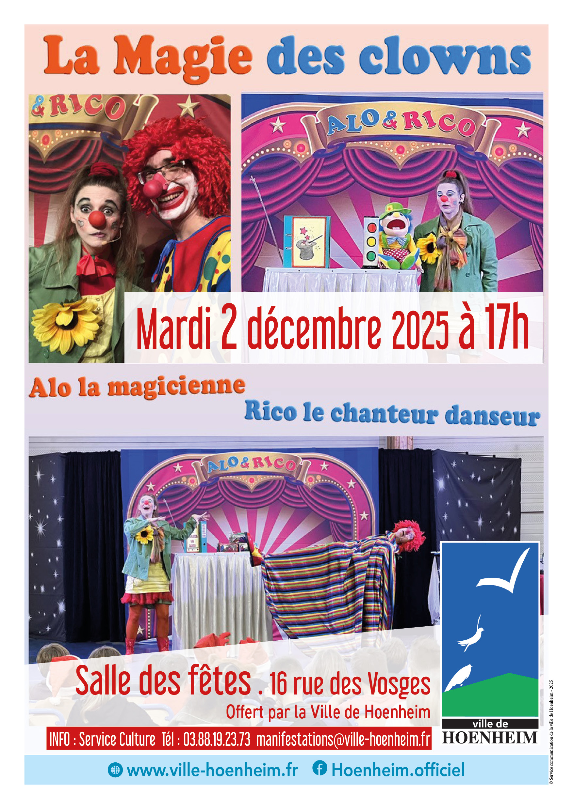

- Cet événement est terminé
Spectacle de Noël pour enfants : « la magie des clowns »
2 décembre 2025 à 17 h 00 min - 18 h 15 min
Navigation de l'événement

ALO la comique magicienne a plus d’un tour dans son sac pour émerveiller les enfants. Ses nombreux tours de magie clownesques savent enchanter le regard et l’imaginaire des enfants (lévitations, disparitions, apparitions, illusions, etc.).
RICO le chanteur-danseur aime bien que les enfants participent à ses numéros. Ils chantent des onomatopées (l’objet mystérieux, la chanson des fanfans) et dansent avec des gestes simples et amusants (la danse des petits clowns) ; et certains d’entre eux participent habillés en fonction du thème.
Avec ces clowns créatifs et imaginatifs, c’est l’esprit de l’enfance qui s’exprime, avec ses éclats de rire, ses jeux, ses mélodies, ses pantomimes, ses gags hilarants, bref un arc-en-ciel d’idées interactives pour s’amuser comme des fous !
Vite, appelez ALO et RICO et vos enfants aussi crieront « Encore ! Encore ! Encore ! ».
Durée du spectacle : 1h 10min
. mardi 2 décembre 2025 à 17 h à la salle des fêtes. Entrée libre.